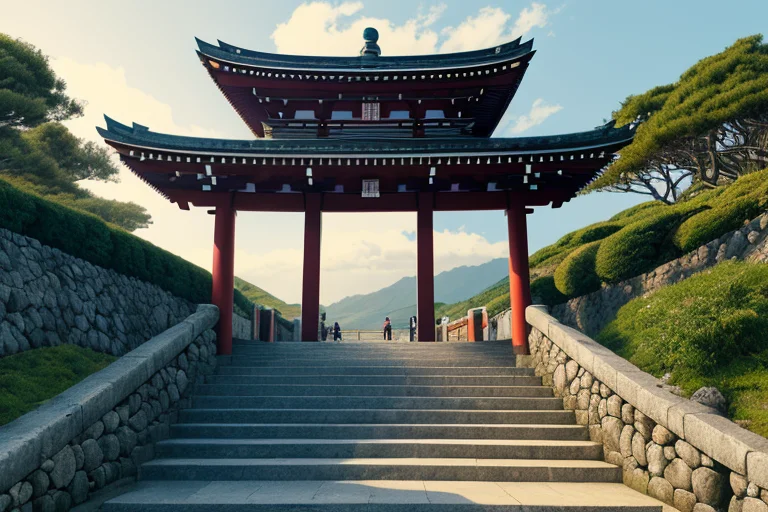
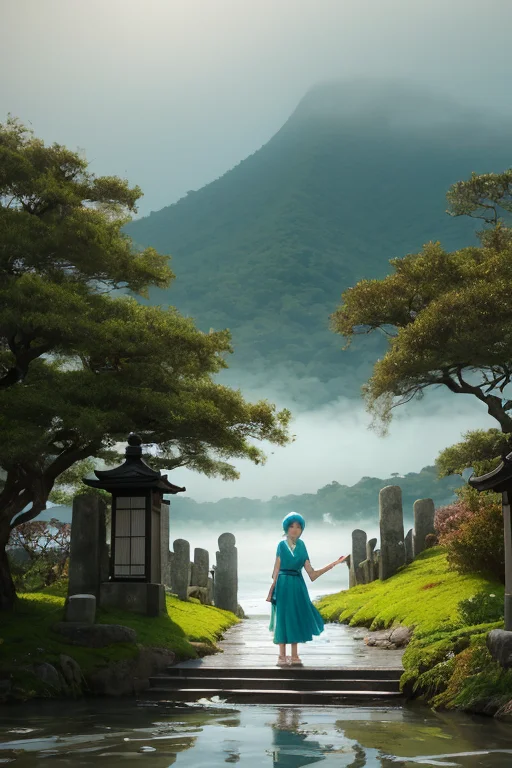
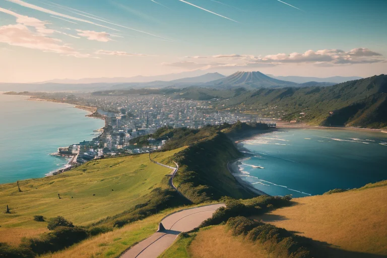
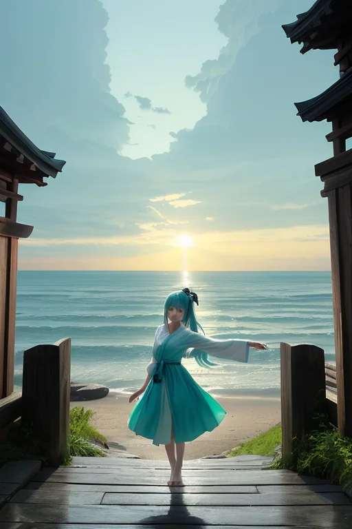
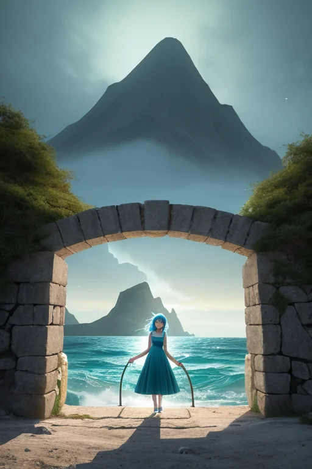

第一章 現実の千葉
あなたはまだ気づいていない。この土地にも、王がいることを。
成田山新勝寺の石段は、今日も多くの人々の足音で磨かれている。参道には落花生やびわの露店が並び、潮風が遠くから、九十九里浜を越えて、かすかな塩気を運んでくる。ここは入口の土地だ。空の玄関口から、海の玄関口へ。人々は祈願のために訪れ、あるいはこの地を通過し、それぞれの人生の次の入口へと向かっていく。
その流れのすべてを、門は見つめている。成田山の信仰がこの地の礎を築き、房総半島の漁業が文化を育んだ歴史の転換点。今も変わり続ける物流と人の波。土地は、絶え間ない「入り」と「出」の繰り返しで形作られてきた。
その現実のただ中で、王は立っている。チバリア・ゲート。その目は、石段を上る老婆の足取り、参拝を終えて空港へ向かう旅行者の背中、港で網を修繕する漁師の手元を、静かに追っている。彼は何も創らない。ただ、存在する現実の「流れ」を見守る調整者である。

第二章 歪みの兆候
成田山新勝寺の石段は、朝もやに濡れていた。参拝客の足音が、いつもより幾重にも重なり、ざわめきのように境内に満ちる。ゲイリアが門王の傍らに現れた。「今日の『入り口』は、どこも混雑しています。航空路、鉄道、道路。全ての流れが、微かに、淀んでいる」
それは、歴史の積層が生む歪みの兆候だった。房総半島を巡る海流の変調が、銚子の漁場に影を落とす。百年単位で培われた漁のリズムが、僅かに狂い始めている。港では、潮の香りの中に、漁師たちの焦りが混じる。養老渓谷の深い緑は変わらぬ静けさを保つが、谷間を流れる水の音に、妖精ウミナリアは耳を澄ませた。「水脈の『入口』で、エネルギーが乱れています」
門王は九十九里浜に立ち、白い波線を見つめた。彼の目には、この地を貫く無数の「入口」―空の門、海の門、人の心の門―から流れ込むエネルギーが、見えない糸のように絡まり、微細な結び目を生んでいるのが見える。彼は手を上げない。ただ、その絡まりが、大きな澱みへと凝縮されないよう、潮風の向きをほんの一瞬、調整した。

第三章 王の葛藤
鋸山の山頂から、東京湾と房総の丘陵を見下ろす門王は、一つの決断を迫られていた。妖精ゲイリアがもたらした情報は、この地に新たな巨大な「入口」が開かろうとしているというものだった。それは物流の革命、人と物がかつてない速度で行き交う新たなゲートの誕生を意味した。
変革は必然だった。しかし、門王の目には、その巨大な流れが、この土地の微細なエネルギー網を、無理やり引き裂く光景が見えていた。養老渓谷の静謐な水脈がかすかに震え、銚子の漁場の潮目が、かすかな予兆のように乱れる。歓迎すべき発展が、同時に無数の小さな「入口」―漁師の勘、農家の暦、参拝者の心の静けさ―を圧迫する。
「止めるべきか」。王は自らに問うた。感情という新しい重みが、彼の判断を鈍らせた。彼は調整者であって、決定者ではない。ただ、流れが破壊的にならないよう、微調整するだけの存在だ。彼は深く息を吸い、潮風の匂い、落花生の土の香りを肺に満たした。答えは、既にこの土地の質感の中にあった。

第四章 妖精との対話
成田山新勝寺の石段は、朝もやに濡れていた。ゲイリアは、巨大な物流施設の設計図が描かれた光の板を、そっと潮風に晒していた。
「門は、開け放たれるべきです」
彼女の声は、いつもの社交的な調子を保ちながらも、芯に覚悟があった。
「この計画は、確かに多くの古い『入口』を塞ぎます。漁師が潮の匂いで読む天候、農家が土の湿り気で感じる播種の時…それらは、効率という名の風に消えていくでしょう」
ウミナリアが、九十九里浜の波の音を、かすかな光のリズムとして転送してきた。かつてない規模の変革は、常に破壊を伴う。
「ですが王よ、新しい『入口』もまた、無数に生まれます」
ゲイリアは光の板を掲げた。そこには、人の流れ、物の流れ、情報の流れ…無数の新しい経路が、房総の地図の上に、水色の線として描き出されていた。
「私たちが調整すべきは、流れそのものを止めることではありません。この激動が、土地の記憶を完全に洗い流さないよう、ほんの少し…古い潮風を新しい門に通すことです」
王は黙って聞いた。彼の感情は、消えゆくものへの哀惜と、生まれゆくものへの期待という、相反する潮の干満を感じていた。

第五章 微調整と余韻
物流革命の波は、鋸山の切り立った崖をも変えようとしていた。巨大な物流拠点の計画が持ち上がり、山肌を削る工事が始まる前夜、門王は山頂に立った。彼の目には、無数の「入口」が映る。古くは石切場として、今は人々の心のよりどころとして、この山は常に何かを内に秘め、何かを外へと送り出してきた。
「代償は大きい」とゲイリアが囁いた。「あなたの『歓迎』の感情の一部を、この土地の記憶の定着に充てるのです。二度と、新しい出会いから直接、喜びを感じることはできません」
王は頷いた。彼は両手を広げ、水色の紋章が鋸山全体を包み込んだ。計画は微調整された。物流拠点はわずかに位置をずらされ、山の霊場と古い石切場の跡は、開発の波に飲み込まれることなく、かすかに残された。代わりに、王の心から、初めて誰かを迎えるときの新鮮な感動が、色あせた写真のように抜け落ちた。
彼は潮風を感じた。新しい門が開き、古い記憶が細い路地として残る。それでいい。すべてを守ることはできない。ただ、流れが全てを洗い流さないよう、ほんの少し、古い潮風を新しい門に通す。それが、この激動の時代における、彼の「歓迎」の形だった。
あなたの町にも、王がいる。